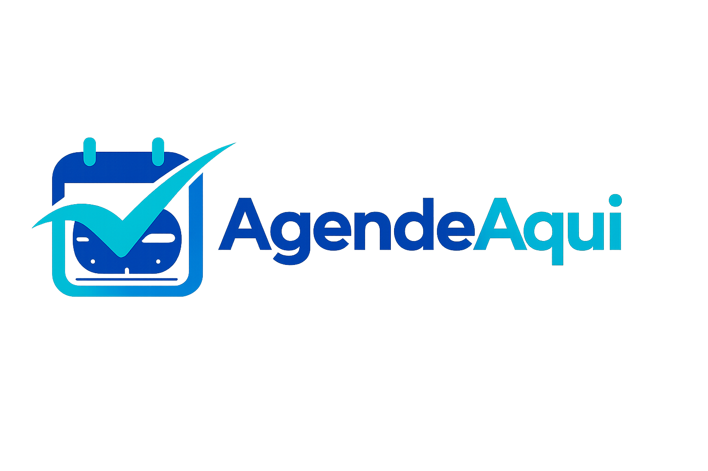
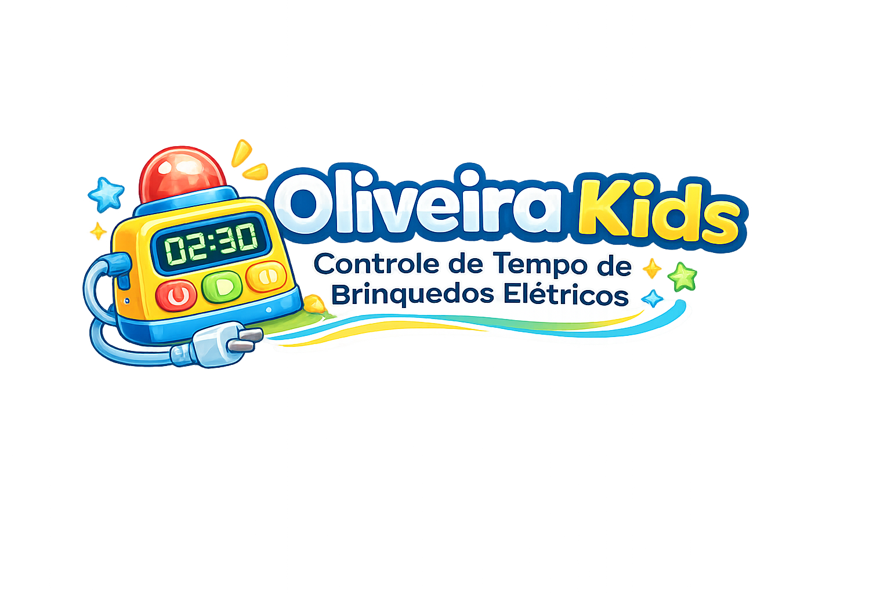
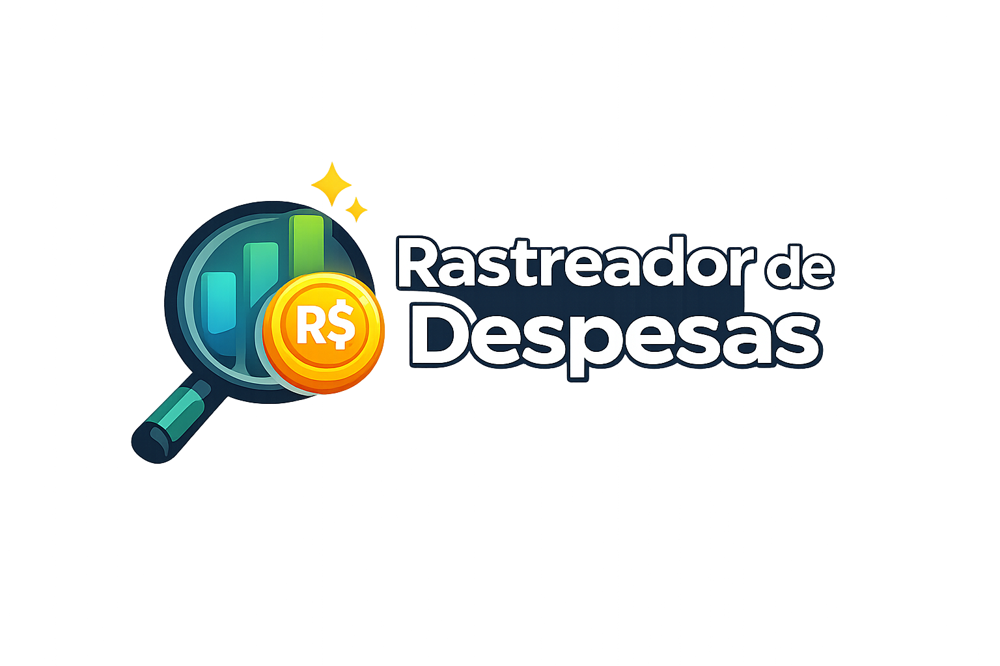
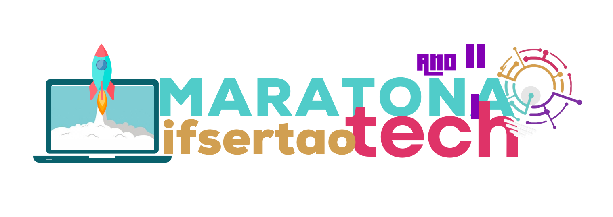

Instituto Federal de Educação, Ciência e Tecnologia do Sertão Pernambucano
Curso Superior de Tecnologia (CST), Gestão da Tecnologia da Informação

Desenvolvedor Full-Stack especializado em Php, Laravel, Python e Django. Crio sistemas web completos e soluções reais.
Sou desenvolvedor Full-Stack focado em sistemas web. Outrossim, sou formado em Téc. de Desenvolvimento de Sistemas e atualmente graduando em Gestão da Tecnologia da infomação. Além disso, gosto de transformar ideias em produtos reais, organizados e prontos para uso.
Atuo de ponta a ponta na: modelagem de dados, APIs, regras de negocio, interface web e deploy com foco em performance e escalabilidade. E já desenvolvi sistemas de gestão, aplicações antifraude e soluções empresariais, sempre com foco em arquitetura limpa, segurança e entrega de valor de negócio.
"Faça o teu melhor, na condição que você tem, enquanto você não tem condições melhores para fazer melhor ainda!"
-Mario Sergio Cortella
Aqui estão as minhas formações
Curso Superior de Tecnologia (CST), Gestão da Tecnologia da Informação
ETE Professor Antônio Carlos Gomes da Costa
Desenvolvimento Full-Stack real, do banco de dados à interface.
Criação de APIs RESTful, autenticação e comunicação entre sistemas.
Aplicações organizadas, escaláveis e preparadas para produção.
Boas práticas, organização e foco em manutenção e performance.
Experiência desenvolvendo sistemas voltados a problemas reais.
Capacidade de planejar, estruturar e entregar aplicações completas.
Abaixo estão as tecnologias que uso no dia a dia
IDEs e ferramentas que utilizo
Alguns dos meus trabalhos recentes

Projeto cujo o intuito é para exibir e divulgar o meu trabalho e conhecimentos.

AgendeAqui é uma plataforma web desenvolvida em Django que revoluciona a forma como instituições de ensino gerenciam seus espaços físicos.

O intuito deste site é transformar, por meio de linhas de código, todo o amor vivido ao longo desse primeiro ano juntos — registrando memórias, sentimentos, sonhos e tudo aquilo que torna nossa história única.

Site de divulgação do projeto de extensão cujo o nome é: "Saberes Interculturais dos Povos Indígenas de Itaparica: Práticas Corporais e de Lazer no Ensino da Educação Física do Instituto Federal do Sertão Pernambucano";

Sistema desenvolvido para controlar de forma simples, rápida e visual o tempo de uso dos carrinhos elétricos, permitindo que operadores.

Aplicativo para acompanhar suas despesas pessoais e gerar relatórios mensais detalhados.
Projetos com contexto real: problema, solução técnica e resultado entregue

Sistema de gestao de recursos educacionais e facilitador de eventos.

Site institucional que se tornou sitema e que foi criado para apresentar serviços, autoridade e canais de contato da empresa.

Plataforma web para gestão de eventos de pitch, permitindo cadastro de eventos, pitchs, usuários participantes e votação online.

Sistema web para operação comercial com produtos, vendas e resumo operacional.

Aplicativo móvel com apoio de IA. Obs: é sigiloso por enquanto
Codigo ativo, consistencia e projetos publicos
Trabalho com foco em entrega real, organizaçâo de repositorios e evolucao continua de projetos web.
Resumo profissional no formato LinkedIn com minhas experiencias mais relevantes.
Freelancer - Freelance
Sou Desenvolvedor Full-Stack, com foco em PHP e Laravel, assim como também em Python e Django, atuando no desenvolvimento de soluções web robustas, escaláveis e bem estruturadas. Trabalho desde a construção do front-end com HTML5, CSS3, JavaScript e Bootstrap, até o back-end, criando APIs, regras de negócio e integrações eficientes.
NTIDI - Next Technology Innovations Digital Technology - Tempo integral
- Desenvolvedor Full-Stack na NTIDI: fiquei responsável pelo ciclo completo de desenvolvimento (Full-Stack) do ecossistema web da empresa. Onde a arquitetura construída com Django (Python) e MySQL, containerizada em Docker para escalabilidade, e interfaces dinâmicas em HTML/CSS/JS e também responsividade em Bootstrap.
- Atuo no projeto Queelvra: Desenvolvimento de uma solução proprietária de cibersegurança, integrando algoritmos de Inteligência Artificial (Python) com uma interface desenvolvida em Flutter. E containerizado em Docker para escalabilidade.
CNPq - Temporário
Bolsista de projeto no âmbito do CNPq, integrando a iniciativa “Saberes Interculturais dos Povos Indígenas de Itaparica: Práticas Corporais e de Lazer no Ensino da Educação Física do Instituto Federal do Sertão Pernambucano”.
Gerência Regional de Educação do Sertão do Submédio do São Francisco - Estágio
Fui responsável pelo desenvolvimento front-end e back-end, organização e padronização do código, implementação de controle de usuários, testes de funcionalidades, refatoração e garantia de responsividade das aplicações. Utilizei as tecnologias HTML, CSS, JavaScript, Python e Django.
JL Imports - Temporario
Responsável integral pela operação da loja, exercendo funções comerciais, administrativas e operacionais de forma autônoma. E tambén, responsável pelo atendimento ao cliente, vendas consultivas de aparelhos e acessórios, controle de caixa e organização financeira diária.
Cartório Único de Itacuruba - Meio período
Responsável pela gerência e criação de documentos de Certidão de Nascimento, Casamento e de Óbito por meio de Software